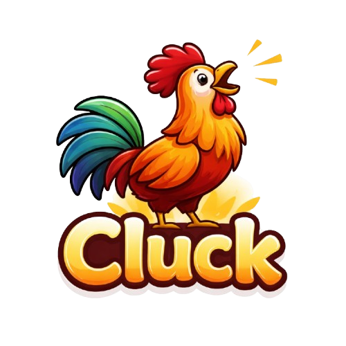

Cluck Support
We're here to help you stay on track.
Frequently Asked Questions
-
How do I set up a routine?
Tap the Routines tab,
choose Morning or Night, then select habits from the library or create
your own.
-
How does the wake-up alarm work?
Set your
wake-up time and choose an alarm sound in the Morning routine
settings. Cluck will sound the alarm at your chosen time.
-
How do streaks work?
Complete both your morning
and night routines every day to build your streak. Miss a day and it
resets to zero.
-
Why am I getting so many notifications?
Cluck
sends reminders to help you stay accountable. You can adjust
notification settings in your device's Settings app under Cluck.
-
Is my data stored online?
No. All your data is
stored locally on your device. We don't collect or transmit any
personal information.
Contact Us
Have a question, found a bug, or want to suggest a feature? Reach out
and we'll get back to you.
Email Support
Report an Issue
You can also report issues on our
GitHub page.